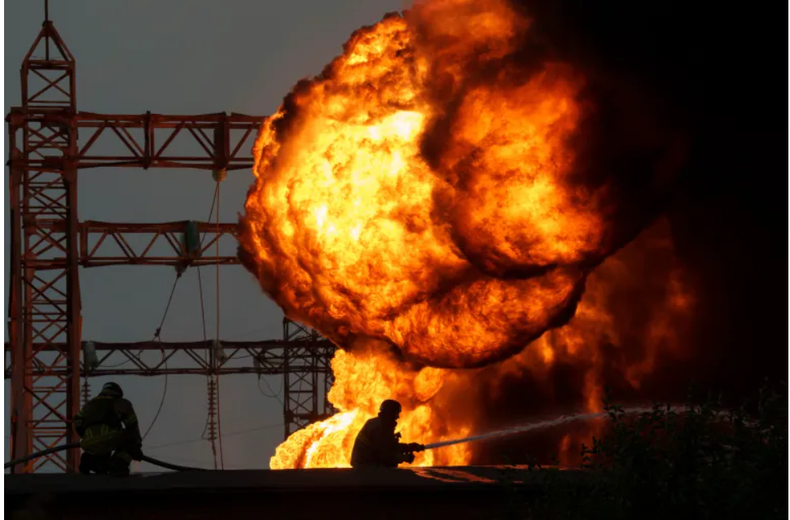

Keypoints about Russia War

List of key events, day 921
Fighting
-
Russia struck Kyiv with dozens of drones and missiles in the early morning,
in a bombardment that coincided with the first day of school.
At least three people were injured in the attack and there was damage to a boiler
house at a Kyiv water plant and to the entrance to a metro station being used as an air raid shelter.
-
Other parts of the country also came under Russian aerial attack.
Ukrainian forces said they destroyed 22 out of 35 missiles and 20 out of 23 attack drones
over the capital as well as the Kharkiv,
Dnipro, Poltava, Mykolaiv and Zaporizhia regions.
-
Dnipropetrovsk regional Governor Serhiy Lysak said one person was killed and three injured in a
Russian missile attack on Dnipro, while Kharkiv regional Governor Oleh Syniehubov said at
least 13 people were injured after four Russian guided bombs hit a residential area.
- Russia advanced on 477 sq km (184 sq miles) of Ukrainian territory in August,
Moscow’s biggest monthly increase since October 2022,
according to data supplied by the Institute for the Study of War and analysed by the AFP news agency.
Ukraine Reaction ->
Russia grinds for east - ->